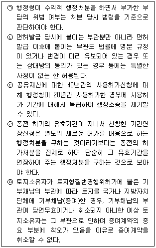

경찰공무원(순경)-행정법 (2021-08-21 기출문제)
1. 행정에 관한 기간의 계산에 관한 설명 중 가장 적절하지 않은 것은?
- 행정에 관한 기간의 계산에 관하여는 ｢행정기본법｣ 또는 다른 법령등에 특별한 규정이 있는 경우를 제외하고는 ｢민법｣을 준용한다.
- 민원의 처리기간을 5일 이하로 정한 경우에는 민원의 접수시각부터 “시간” 단위로 계산하되, 공휴일과 토요일은 산입하지 아니한다.
- 100일간 운전면허정지처분을 받은 사람의 경우, 100일째 되는 날이 공휴일인 경우에도 면허정지 기간은 그 날(공휴일 당일)로 만료한다.
- 법령등(훈령·예규·고시·지침 등을 포함한다)의 시행일을 정하거나 계산할 때 법령등을 공포한 날부터 일정 기간이 경과한 날부터 시행하는 경우 법령등을 공포한 날을 첫날에 산입한다.
(정답률: 알수없음)

2. 행정의 법원칙에 관한 설명 중 가장 적절하지 않은 것은?(다툼이 있는 경우 판례에 의함)
- 행정작용은 법률에 위반되어서는 아니되며, 국민의 권리를 제한하거나 의무를 부과하는 경우와 그 밖에 국민생활에 중요한 영향을 미치는 경우에는 법률에 근거하여야 한다.
- 재량준칙은 일반적으로 행정조직 내부에서만 효력을 가질 뿐 대외적인 구속력을 갖는 것은 아니므로 행정처분이 이를 위반하였다고 하여 그러한 사정만으로 곧바로 위법하게 되는 것은 아니다. 다만, 그 재량준칙이 정한 바에 따라 되풀이 시행되어 행정관행이 이루어지게 되면 평등의 원칙이나 신뢰보호의 원칙에 따라 행정기관은 상대방에 대한 관계에서 그 규칙에 따라야 할 자기구속을 받는다.
- 행정청은 공익 또는 제3자의 이익을 현저히 해칠 우려가 있는 경우를 제외하고는 행정에 대한 국민의 정당하고 합리적인 신뢰를 보호하여야 한다.
- 고속국도의 관리청이 고속도로 부지와 접도구역에 송유관 매설을 허가하면서 상대방과 체결한 협약에 따라 송유관 시설을 이전하게 될 경우 상대방에게 그 비용을 부담하도록 한 부관은 행정작용과 실질적 관련성이 없는 의무를 부과하는 것으로서 부당결부금지원칙에 위반된다.
(정답률: 알수없음)
3. 행정입법에 관한 설명 중 가장 적절하지 않은 것은?(다툼이 있는 경우 판례에 의함)
- 지방자치단체의 조례가 규정하고 있는 사항이 근거 법령 등에 비추어 볼 때 자치사무나 단체위임사무에 관한 것이라면 위임조례와 같이 국가법에 적용되는 일반적인 위임입법의 한계가 적용될 여지는 없다.
- 일반적으로 법률의 위임에 따라 효력을 갖는 법규명령의 경우, 위임의 근거가 없어 무효였다고 하더라도 나중에 법률 개정을 통해 위임의 근거가 부여되었다면 그때부터는 유효한 법규명령으로 볼 수 있다.
- 전결(專決)과 같은 행정권한의 내부위임은 법령상 처분권자인 행정관청이 내부적인 사무처리의 편의를 도모하기 위하여 그의 보조기관 또는 하급 행정관청으로 하여금 그의 권한을 사실상 행사하게 하는 것으로서 법률의 위임이 있어야 허용된다.
- 헌법이 인정하고 있는 위임입법의 형식은 예시적인 것으로 보아야 할 것이고, 법률이 행정규칙에 위임하더라도 그 행정규칙은 위임된 사항만을 규율할 수 있으므로 국회입법의 원칙과 상치되지 않는다.
(정답률: 알수없음)
4. 행정행위에 관한 설명 중 가장 적절하지 않은 것은? (다툼이 있는 경우 판례에 의함)
- 건축허가는 대물적 성질을 갖는 것이어서 행정청으로서는 그 허가를 할 때에 건축주 또는 토지소유자가 누구인지 등 인적 요소에 관하여는 형식적 심사만 한다.
- 횡단보도를 설치하여 보행자 통행방법 등을 규제하는 것은 특정 사항에 대하여 의무의 부담을 명하는 행위이고, 이는 국민의 권리·의무에 직접 관계가 있는 행위로서 행정처분이다.
- ｢국토의 계획 및 이용에 관한 법률｣ 이 정한 용도지역 안에서 토지의 형질 변경(경작을 위한 경우로서 대통령령으로 정하는 토지의 형질 변경은 제외)을 수반하는 건축허가는 ｢건축법｣ 제11조제1항에 의한 건축허가와 ｢국토의 계획 및 이용에 관한 법률｣ 상의 개발행위허가의 성질을 아울러 갖게 되므로 재량행위에 해당한다.
- 건설업 등록증 및 건설업 등록수첩의 재발급은 건설업 등록을 하였다고 하는 사실을 특정인이나 불특정인에게 알리는 준법률행위적 행정행위인 통지행위에 해당한다.
(정답률: 알수없음)
5. 강학상 허가･인가･특허 등에 관한 설명 중 가장 적절하지 않은 것은? (다툼이 있는 경우 판례에 의함)
- 영업장 면적이 변경되었음에도 그에 관한 신고의무를 이행하지 않은 양도인으로부터 음식점 영업을 양수한 자가 그와 같은 신고의무를 이행하지 않은 채 영업을 계속한다면 ｢식품위생법｣에 의한 영업허가취소나 영업정지의 대상이 될 수 있다.
- ｢공유재산 및 물품 관리법｣은 행정재산을 사용·수익허가의 대상으로 정하고 있으나, 행정재산이라 하더라도 공용폐지가 되면 행정재산으로서의 성질을 상실하여 일반재산이 되므로 강학상 특허에 해당하는 행정재산의 사용·수익에 대한 허가는 그 효력이 소멸된다.
- 구 ｢임대주택법｣상 분양전환승인 중 분양전환가격을 승인하는 부분은 분양전환에 따른 분양계약의 매매대금 산정의 기준이 되는 분양전환가격의 적정성을 심사하여 그 분양전환가격이 적법하게 산정된 것임을 확인하고 임대사업자로 하여금 승인된 분양전환가격을 기준으로 분양전환을 하도록 하는 처분으로서 분양계약의 효력을 보충하여 그 효력을 완성시켜주는 강학상 인가에 해당한다.
- 마을버스운송사업면허의 허용 여부는 사업구역의 교통수요, 노선결정, 운송업체의 수송능력, 공급능력 등에 관하여 기술적·전문적인 판단을 요하는 분야로서 이에 관한 행정처분은 운수행정을 통한 공익실현과 아울러 합목적성을 추구하기 위하여 보다 구체적 타당성에 적합한 기준에 의하여야 할 것이므로 그 범위 내에서는 법령이 특별히 규정한 바가 없으면 행정청의 재량에 속한다.
(정답률: 알수없음)
6. 행정법상 부관에 관한 설명이다. 아래 ㉠부터 ㉤까지의 설명 중 옳은 것만을 모두 고른 것은? (다툼이 있는 경우 판례에 의함)

- ㉠㉡㉢
- ㉠㉡㉤
- ㉡㉢㉣
- ㉢㉣㉤
(정답률: 알수없음)
7. 행정처분의 취소와 철회에 관한 설명 중 가장 적절하지 않은 것은? (다툼이 있는 경우 판례에 의함)
- 수익적 행정처분에 하자가 있음을 이유로 처분청이 이를 취소하는 경우, 그 처분의 하자가 당사자의 사실은폐나 기타 사위의 방법에 의한 신청행위에 기인한 것이라면, 처분의 상대방은 그 처분에 의한 이익이 위법하게 취득되었음을 알아 그 취소가능성도 예상하고 있었다고 할 것이므로 행정청이 당사자의 신뢰이익을 고려하지 아니하였다고 하여도 재량권의 남용이 되지 아니한다.
- 행정처분을 한 처분청은 처분의 성립에 하자가 있는 경우 별도의 법적 근거가 없더라도 직권으로 이를 취소할 수 있다고 봄이 원칙이므로, ｢국민연금법｣이 정한 수급요건을 갖추지 못하였음에도 연금 지급결정이 이루어진 경우에는 이미 지급된 급여 부분에 대한 환수처분과 별도로 지급결정을 취소할 수 있다.
- 과세관청은 과세처분의 취소처분이 당연무효의 하자가 없는 한 이를 다시 취소함으로써 원 과세처분을 소생시킬 수 있으며 새로이 법률에서 정한 절차에 따라 동일한 내용의 처분을 다시 할 필요는 없다.
- 수익적 행정처분에 대한 취소권 등의 행사는 기득권의 침해를 정당화할 만한 중대한 공익상의 필요 또는 제3자의 이익보호의 필요가 있는 때에 한하여 허용될 수 있다는 법리는, 처분청이 수익적 행정처분을 직권으로 취소·철회하는 경우에 적용되는 법리일 뿐 쟁송취소의 경우에는 적용되지 않는다.
(정답률: 알수없음)
8. 행정절차의 하자에 관한 설명 중 가장 적절하지 않은 것은?(다툼이 있는 경우 판례에 의함)
- 임기가 정해진 별정직 공무원인 대통령기록관장을 직권면직하면서 당사자에게 사전통지를 하지 않고 의견제출의 기회를 주지 않았다고 하여 ｢행정절차법｣을 위반하였다고 볼 것은 아니다.
- 징계와 같은 불이익처분절차에서 징계심의대상자에게 변호사를 통한 방어권의 행사를 보장하는 것이 필요하고, 징계심의대상자가 선임한 변호사가 징계위원회에 출석하여 징계심의대상자를 위하여 필요한 의견을 진술하는 것은 방어권 행사의 본질적 내용에 해당하므로, 행정청은 특별한 사정이 없는 한 이를 거부할 수 없다.
- 해상 공유수면 매립지의 귀속 결정을 위한 지방자치단체중앙분쟁조정위원회의 심의·의결과정에서 공고 및 의견제출 절차를 통해 이해관계인의 의견제출 기회가 부여되어 A도지사가 여러 차례 서면으로 의견을 제출하였다면, 단지 최종 심의·의결 단계에서 A도 소속 공무원에게 구두로 의견을 진술할 기회를 부여하지 않았다는 사정만으로 위원회의 심의·의결에 절차적 정당성이 상실되었다고 볼 수는 없다.
- 지방자치단체와 민간단체 등이 공동발족한 추모공원건립추진협의회가 시립화장장 후보지 선정을 위해 개최하는 공청회는 행정청이 도시계획시설결정을 하면서 개최한 공청회가 아니므로｢행정절차법｣에서 정한 절차를 준수하여야 하는 것은 아니다.
(정답률: 알수없음)
9. 공법상 계약에 관한 설명 중 가장 적절하지 않은 것은? (다툼이 있는 경우 판례에 의함)
- 지방자치단체가 자원회수시설과 부대시설의 운영·관리 등을 위탁하고 그 위탁운영비용을 지급하는 것을 내용으로 하는 용역계약을 사인과 체결한 경우, 이러한 위탁운영에 관한 협약의 법적 성질은 공법상 계약에 해당한다.
- ｢국가를 당사자로 하는 계약에 관한 법률｣에 따라 국가가 당사자가 되는 이른바 공공계약은 사경제 주체로서 상대방과 대등한 위치에서 체결하는 사법상 계약으로서 본질적인 내용은 사인 간의 계약과 다를 바가 없으므로, 그에 관한 법령에 특별한 정함이 있는 경우를 제외하고는 사적 자치와 계약자유의 원칙 등 사법의 원리가 그대로 적용된다.
- 중소기업기술정보진흥원장이 갑 회사와 중소기업 정보화지원사업 지원대상인 사업의 지원에 관한 협약을 체결하였는데, 협약이 갑 회사에 책임이 있는 사업실패로 해지되었다는 이유로 협약에서 정한 대로 지급받은 정부지원금을 반환할 것을 통보한 것은 행정처분에 해당하지 않는다.
- 국가 산하 중앙행정기관인 방위사업청과 개발협약을 체결한 상대방이 협약을 이행하는 과정에서 환율변동 등 외부적 요인으로 발생한 초과 비용을 청구하는 소송은 행정소송에 해당한다.
(정답률: 알수없음)
10. ｢공공기관의 정보공개에 관한 법률｣에 의한 정보공개에 관한 설명 중 가장 적절하지 않은 것은? (다툼이 있는 경우 판례에 의함)
- 공공기관 중 중앙행정기관 및 대통령령으로 정하는 기관은 전자적 형태로 보유·관리하는 정보 중 공개대상으로 분류된 정보를 국민의 정보공개 청구가 없더라도 정보통신망을 활용한 정보공개시스템 등을 통하여 공개하여야 한다.
- 정당한 사유 없이 반복적으로 동일 대상에 대한 정보를 청구하거나 ｢민원 처리에 관한 법률｣에 따른 민원으로 처리된 정보를 다시 청구하는 공개청구의 남용이 있는 경우 ｢질서위반행위규제법｣에 따른 과태료 부과처분의 대상이 된다.
- 공개청구를 받은 공공기관이 공개청구대상정보의 기초자료를 전자적 형태로 보유·관리하고 있고, 당해 기관에서 통상 사용되는 컴퓨터 하드웨어 및 소프트웨어와 기술적 전문지식을 사용하여 그 기초자료를 검색하여 청구인이 구하는 대로 편집할 수 있으며, 그러한 작업이 당해 기관의 컴퓨터 시스템 운용에 별다른 지장을 초래하지 아니한다면, 그 공공기관이 공개청구대상정보를 보유·관리하고 있는 것으로 볼 수 있다.
- 정보공개청구인은 특정한 정보공개 방법을 지정하여 청구할 수 있는 법령상 신청권이 있다고 할 것이므로 공공기관이 공개청구의 대상이 된 정보를 정보공개청구인이 신청한 공개방법 이외의 방법으로 공개하기로 하는 결정을 하였다면, 이는 정보공개 방법에 관한 부분에 대하여 일부 거부처분을 한 것이고 정보공개청구인은 그에 대해 항고소송을 제기할 수 있다.
(정답률: 알수없음)
11. ｢행정대집행법｣상 대집행에 관한 설명 중 가장 적절하지 않은 것은? (다툼이 있는 경우 판례에 의함)
- 적법한 건축물에 대한 철거명령은 그 하자가 중대하고 명백하여 당연무효이고, 그 후행행위인 건축물철거 대집행계고 역시 당연무효이다.
- 제1차로 철거명령 및 대집행계고를 한 데 이어 제2차로 대집행계고를 하였는데도 불응하여 대집행을 일부 실행한 후 철거의무자의 연기 요청을 받아들여 중단하였다가 그 기한이 지나 다시 제3차로 철거명령 및 대집행계고를 한 경우에 제3차로 한 철거명령 및 대집행계고는 항고소송의 대상이 되지 않는다.
- 행정청이 행정대집행의 방법으로 건물의 철거 등 대체적 작위의무의 이행을 실현할 수 있는 경우에는 따로 민사소송의 방법으로 그 의무의 이행을 구할 수 없다.
- 행정대집행을 실시하기 위하여 지출한 비용은 민사소송절차에 의하여 그 비용의 상환을 청구할 수 있다.
(정답률: 알수없음)
12. 이행강제금, 과태료, 과징금, 가산세에 관한 설명 중 가장 적절하지 않은 것은? (다툼이 있는 경우 판례에 의함)
- ｢건축법｣상 이행강제금 부과처분을 받은 자가 이행강제금을 납부기한까지 내지 아니하면 ｢지방행정제재･부과금의 징수 등에 관한 법률｣에 따라 징수한다.
- 행정청의 과태료 처분이나 법원의 과태료 재판이 확정된 후 법률이 변경되어 그 행위가 질서위반행위에 해당하지 아니하게 되거나 과태료가 변경되기 전의 법률보다 가볍게 된 때에는 변경된 법률에 특별한 규정이 없는 한 과태료의 징수 또는 집행을 면제한다.
- 공정거래위원회가 여러 개의 위반행위에 대하여 하나의 과징금 납부명령을 하였으나 여러 개의 위반행위 중 일부 위반행위에 대한 과징금 부과만이 위법하고 소송상 그 일부 위반행위를 기초로 한 과징금액을 산정할 수 있는 자료가 있는 경우에 그 일부 위반행위에 대한 과징금액에 해당하는 부분만을 취소하여야 한다.
- 세법상 가산세는 납세의무자가 정당한 이유 없이 법에 규정된 신고, 납세 등 각종 의무를 위반한 경우에 법이 정하는 바에 따라 부과하는 행정상의 제재로서, 그 의무를 게을리한 점을 탓할 수 없는 정당한 사유가 있는 경우에는 부과할 수 없다.
(정답률: 알수없음)
13. ｢국가배상법｣ 제5조에 관한 설명 중 가장 적절하지 않은 것은? (다툼이 있는 경우 판례에 의함)
- 도로의 설치 및 관리에 있어 완전무결한 상태를 유지할 정도의 고도의 안전성을 갖추지 아니하였다고 해서 하자가 있다고 단정할 수는 없다.
- 하천정비기본계획 등에서 정한 계획홍수량 및 계획홍수위를 충족하여 하천이 관리되고 있다면 특별한 사정이 없는 한, 그 하천은 용도에 따라 통상 갖추어야 할 안전성을 갖추고 있다고 볼 수 있다.
- 영조물의 물적 시설 자체의 물리적 흠결 등으로 이용자에게 위해를 끼칠 위험성이 있는 경우뿐만 아니라 영조물이 공공의 목적에 이용됨에 있어 그 이용 상태 및 정도가 일정한 한도를 초과하여 이용자에게 사회통념상 수인할 것이 기대되는 한도를 넘는 피해를 입히는 경우도 영조물의 설치 또는 관리의 하자에 포함된다.
- 위험의 존재를 인식하면서 그로 인한 피해를 용인하며 접근한 것으로 볼 수 있고 나아가 그 피해가 정신적 고통이나 생활방해의 정도에 그치며 그 침해행위에 고도의 공공성이 인정되는 때에는 위험에 접근한 후에 그 위험이 특별히 증대하였다는 등의 특별한 사정이 없는 이상 가해자의 면책을 인정하여야 하는 경우가 있다.
(정답률: 알수없음)
14. 국토교통부장관이 관리하는 국가하천(이하 A)의 유지·보수 사무가 지방자치단체(이하 B)의 장에게 위임되고, B가 A의 유지·보수에 필요한 비용을 부담하며 이에 관한 국가의 보조금을 받아오던 중에, A의 관리상 하자로 인하여 그 이용자가 사망하는 사고가 발생하였다. 이에 관한 설명 중 가장 적절하지 않은 것은? (다툼이 있는 경우 판례에 의함)
- 국가는 A의 설치·관리 사무의 귀속주체로서 배상책임을 진다.
- 국가는 A의 설치·관리 비용을 부담하는 자로서 배상책임을 진다.
- B는 A의 설치·관리 사무의 귀속주체로서 배상책임을 진다.
- B는 A의 설치·관리 비용을 부담하는 자로서 배상책임을 진다.
(정답률: 알수없음)
15. ｢공익사업을 위한 토지 등의 취득 및 보상에 관한 법률｣상 사업인정에 관한 설명 중 가장 적절하지 않은 것은? (다툼이 있는 경우 판례에 의함)
- 사업인정은 공익사업의 시행자에게 그 후 일정한 절차를 거칠 것을 조건으로 일정한 내용의 수용권을 설정하여 주는 형성행위이다.
- 사업인정이 있는 것으로 의제되는 공익사업의 허가･인가･승인권자 등은 사업인정이 의제되는 지구지정･사업계획승인 등을 하려는 경우, 관할 지방토지수용위원회와 협의하여야 하고, 사업인정에 이해관계가 있는 자의 의견을 들어야 한다.
- 사업인정은 고시한 날부터 그 효력이 발생한다.
- 사업인정 단계에서 하자를 다투지 아니하여 이미 쟁송기간이 도과한 수용재결 단계에서는 사업인정이 당연무효라고 볼만한 사정이 없다면 사업인정의 위법을 이유로 수용재결의 취소를 구할 수 없다.
(정답률: 알수없음)
16. 국가가 적법한 보상절차를 밟지 않고 사인의 토지를 ｢도로법｣상 도로를 구성하는 부지로 점유하고 있는 경우에 관한 설명 중 가장 적절하지 않은 것은? (다툼이 있는 경우 판례에 의함)
- ｢도로법｣의 적용을 받는 도로의 경우에는 적어도 ｢도로법｣에 의한 도로 노선의 지정･고시 및 도로구역의 결정이 된 때부터 도로관리청인 국가의 점유를 인정할 수 있다.
- 토지의 소유자는 부당이득반환을 청구할 수 있다.
- 토지의 소유자는 결과제거청구권의 행사로서 그 토지의 인도를 청구할 수 있다.
- 토지의 소유자가 그 토지를 일반 공중을 위한 용도로 제공한 경우에 그 토지에 대한 독점적·배타적인 사용·수익권을 포기한 것으로 볼 수 있다면 특별한 사정이 없는 한 부당이득반환이나 그 토지의 인도를 청구할 수 없다.
(정답률: 알수없음)
17. ｢행정심판법｣상 재결에 관한 설명 중 가장 적절한 것은?(다툼이 있는 경우 판례에 의함)
- 피청구인이 거부처분을 취소하는 재결의 취지에 따라 다시 이전의 신청에 대한 처분을 하지 아니하는 경우에 행정심판위원회는 직접 처분을 할 수 있다.
- 피청구인이 당사자의 신청을 거부한 처분의 이행을 명하는 재결에도 불구하고 이전의 신청에 대하여 재결의 취지에 따라 처분을 하지 아니하는 경우에 행정심판위원회는 간접강제를 할 수 있다.
- 재결이 확정되면 기판력이 인정되므로 처분의 기초가 된 사실관계나 법률적 판단이 확정되고 당사자들이나 법원은 이에 기속되어 모순되는 주장이나 판단을 할 수 없다.
- 당사자가 합의한 사항을 조정서에 기재한 후 당사자가 서명 또는 날인하고 행정심판위원회가 이를 확인함으로써 성립하는 조정에 대하여는 제51조(행정심판 재청구의 금지)의 규정이 준용되지 않는다.
(정답률: 알수없음)
18. ｢행정소송법｣ 제18조에서 규정하는 '다른 법률에 당해 처분에 대한 행정심판의 재결을 거치지 아니하면 취소소송을 제기할 수 없다는 규정이 있는 때'에 해당하지 않는 것은? (다툼이 있는 경우 판례에 의함)
- ｢국민건강보험법｣상 보험료 부과처분에 불복하는 심판청구에 대한 건강보험분쟁조정위원회의 결정
- ｢지방세기본법｣상 지방세 부과처분에 불복하는 심판청구에 대한 조세심판원의 결정(단, 심판청구에 대한 재조사 결정에 따른 처분청의 처분에 대한 행정소송의 경우는 제외)
- ｢도로교통법｣상 운전면허 취소처분에 불복하는 심판청구에 대한 중앙행정심판위원회의 재결
- ｢특허법｣상 특허거절결정에 불복하는 심판청구에 대한 특허심판원의 심결
(정답률: 알수없음)
19. ｢행정소송법｣상 제소기간에 관한 설명 중 가장 적절하지 않은 것은? (다툼이 있는 경우 판례에 의함)
- 동일한 행정처분에 대하여 무효확인소송을 제기하였다가 그 후 그 처분의 취소를 구하는 소송을 추가적으로 병합한 경우에 주된 청구인 무효확인소송이 적법한 제소기간 내에 제기되었다면 추가로 병합된 취소소송도 적법하게 제기된 것으로 보아야 한다.
- ｢국세기본법｣상 심판청구에 대한 재조사 결정에 따른 처분청의 처분에 대해서 심판청구를 거쳐서 그 결정의 통지를 받은 경우에 그 통지를 받은 날부터 90일 이내에 행정소송을 제기하여야 한다.
- 행정청이 불가쟁력이 발생한 당초처분에 대해 양적 일부취소로서의 감액처분을 하면서 행정심판을 청구할 수 있다고 잘못 알린 경우에는 그에 따라 청구된 행정심판재결서 정본을 송달받은 날부터 90일 이내에 당초처분 중 감액처분에 의하여 취소되지 않고 남은 부분의 취소를 구하는 소송을 제기하여야 한다.
- 부작위위법확인소송도 행정심판 등 전심절차를 거친 경우에는 제20조(제소기간)의 규정이 적용된다.
(정답률: 알수없음)
20. ｢행정소송법｣상 취소판결의 기속력에 관한 설명 중 가장 적절하지 않은 것은? (다툼이 있는 경우 판례에 의함)
- 거부처분을 취소하는 판결이 확정된 경우에 행정청은 사실심 변론종결 이후 발생한 새로운 사유를 내세워 다시 이전의 신청에 대한 거부처분을 할 수 있지만, 재처분을 부당하게 지연하면서 확정판결의 기속력을 잠탈하기 위하여 인위적으로 새 거부처분 사유를 만들어 낸 것이라면 유효한 재처분이 아니다.
- 새로운 처분의 처분사유가 종전 처분의 처분사유와 기본적 사실관계에서 동일하지 않은 다른 사유에 해당하는 이상, 처분사유가 종전 처분 당시 이미 존재하고 있었고 당사자가 이를 알고 있었더라도 이를 내세워 새로이 처분을 하는 것은 확정판결의 기속력에 저촉되지 않는다.
- 어떤 행정처분을 위법하다고 판단하여 취소하는 판결이 확정되면 행정청은 취소판결의 기속력에 따라 그 판결에서 확인된 위법사유를 배제한 상태에서 다시 처분을 하거나 그 밖에 위법한 결과를 제거하는 조치를 할 의무가 있다.
- 수익적 행정처분을 신청한 여러 사람이 서로 경원관계에 있어서 한 사람에 대한 허가 처분이 다른 사람에 대한 불허가로 귀결될 수밖에 없을 때 허가 처분을 받지 못한 사람의 신청에 대한 거부처분의 취소판결이 확정되는 경우 행정청은 취소판결의 기속력에 따라 경원자에 대한 수익적 처분을 취소하여야 할 의무가 있다.
(정답률: 알수없음)